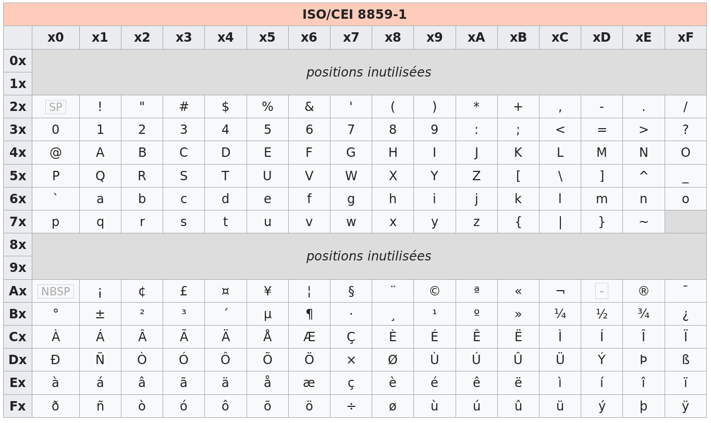

Programme Officiel
| Contenus | Capacités attendues | Commentaires |
|---|---|---|
Représentation d’un texte en machine. Exemples des encodages |
Identifier l’intérêt des différents systèmes d’encodage. Convertir un fichier texte dans différents formats d’encodage. |
Aucune connaissance précise des normes d’encodage n’est exigible |
Dans ce chapitre, nous allons voir comment coder en binaire du texte, et donc apprendre quelles sont les méthodes utilisées pour encoder des caractères en binaire. Nous allons voir que le choix du codage des caractères dépend fortement des langues, ainsi la langue française comporte de nombreuses lettres spécifiques: é, è, ê, ç, à…

Le premier codage à avoir été utilisé est le codage ASCII (American Standard Code for Information Interchange), qui ne prévoit pas l’utilisation de lettres accentuées et qui peut vous amener parfois à lire des textes à la limite du compréhensible sur vos écrans.
Le codage ASCII
Le codage ASCII est une norme de codage de caractères en informatique ancienne et connue pour son influence incontournable sur les codages de caractères qui lui ont succédé. Elle était la plus largement compatible pour ce qui est des caractères latins non accentués. ASCII contient les caractères nécessaires pour écrire en anglais.
L’ASCII définit seulement 128 caractères numérotés de 0 à 127 et codés en binaire de 0000000 à 1111111. Sept bits suffisent donc pour représenter un caractère codé en ASCII. Toutefois, les ordinateurs travaillant presque tous sur un multiple de huit bits (multiple d’un octet) depuis les années 1970, chaque caractère d’un texte en ASCII est souvent stocké dans un octet dont le 8e bit est 0. Article ASCII sur Wikipédia
Voici la table ASCII:

Certains des caractères présents ne peuvent pas être affichés(repérés par un fond bleu), ce sont des caractères de contrôle. Vous pouvez trouver leur signification sur cette page.
Pour lire le tableau, on associe au caractère le code binaire suivant: n°deligne_n°decolonne. Par exemple, le caractère a est situé dans la case correspondant à la 7ᵉ ligne, 2ᵉ colonne. Sa représentation binaire est:110_0001 soit sous la forme d’un octet: 01100001. Ce qui correspond au caractère 97 en décimal.
Pour faciliter la lecture des codes ASCII par un humain, il est plus commode de coder les numéros de ligne et de colonne en hexadécimal, et la lettre ‘a’ aura alors pour code 61 en hexadécimal.
L’encodage ISO
La nécessité de représenter des textes comportant des caractères non présents dans la table ASCII tels ceux de l’alphabet latin utilisés en français comme le ‘à’, le ‘é’ ou le ‘ç’ impose l’utilisation d’un autre codage que l’ASCII.
Les codages ISO sont des extensions du codage ASCII:
- Le codage des 128 caractères présents dans la table ASCII est conservé;
- les 128 caractères supplémentaires sont régionalisés en fonction des divers alphabets du monde.
L’ISO, organisation internationale de normalisation, propose de son côté plusieurs variantes de codages adaptées aux différentes langues. La plus utilisée concerne les langues européennes occidentales. Il s’agit de l’ISO-8859-1, aussi nommé
ISO-Latin1. Université de Lille
On peut constater que cette table ne prend pas en charge le caractère €, ainsi une nouvelle norme mieux adaptée au français a été introduite l’ISO 8859-15.
Certains caractères ont été ajoutés dont €, œ, Œ…
Mais il existe d’autres variantes adaptées à d’autres langues:
ISO-8859-2pour les pays d’Europe de l’Est,ISO-8859-3pour les pays du sud est de l’Europe…
Du fait de l’internationalisation des pratiques en informatique, on a mis au point un standard international permettant d’encoder les caractères de toutes les langues: le standard Unicode.
L’encodage Unicode UTF-8
L’encodage UTF-8 est un encodage en élaboration qui permet d’encoder tous les caractères de toutes les langues, il est actuellement en train de s’imposer face aux antres encodages en raison de son universalité.
La norme UTF-8 utilise un codage de longueurs variable sur un à quatre octets. Les caractères à un octet sont équivalents avec le code ASCII assurant ainsi la rétro-compatibilité avec le standard ASCII.
Statistiques actualisées
Au 21 septembre 2019, l’UTF-8 est utilisé par 94% des sites. Source
À l’évidence, 256 caractères ne suffisant pas pour représenter les lettres de tous les alphabets utilisés (pensons au russe, à l’hébreu, etc.), un nouveau standard a été introduit : Unicode. La table Unicode comporte la définition de près de cent cinquante mille caractères. Le codage de cette table est multiple. Le codage le plus couramment utilisé se nomme UTF-8. Son principe est le suivant : une première série de caractères sont codés sur un octet. D’autres caractères sont codés sur deux octets, le premier octet débute par ‘110’ pour l’indiquer, l’octet suivant débute par ‘10’. De même des codages sur 3 ou 4 octets sont utilisés pour d’autres caractères. (Cette rapide introduction à UTF-8 est volontairement simplifiée.) Les 128 premiers caractères de la table UTF-8 sont compatibles avec le codage ASCII. Ainsi le codage UTF-8 d’un texte ne comportant que des caractères présents dans la table ASCII sera le même que le codage ASCII de ce texte. Ce ne sera pas vrai pour un texte ISO-Latin-1. Il importe donc, quand on veut décoder un texte, de savoir quel est le codage utilisé sous peine de décoder improprement les caractères. Université de Lille
La table complète des caractères Unicode peut être consultée sur l’article Wikipédia
Par exemple si on cherche dans cette table la lettre é, on trouve le code:U+00E9 appelé point code, en binaire cela correspond au nombre décimal 233, et au nombre binaire 1110 1001. Ce nombre binaire sera représenté en UTF-8 sur deux octets sous la forme: 110x_xxxx 10xx_xxxx. Les chiffres binaires du point de code sont rangés de droite à gauche aux positions ‘x’ de ce schéma.
On obtient donc 1100_0011 1010_1001 pour le caractère é.
Ce qui représente en hexadécimal:C3 A9, il occupe donc deux octets.
L’encodage des caractères en python
En python 3, tous les fichiers doivent être codés en UTF-8, et les chaînes de caractères string sont encodées en UTF-8, contrairement aux bytes qui ne doivent contenir que des caractères ASCII.
L’encodage des caractères en html
Pour obtenir un affichage correct des caractères spéciaux en html, il faut déclarer l’encodage utf-8 dans le fichier d’en-tête(<head>) de la page html en utilisant la balise <meta>.
Voici la structure type d’un fichier html5.
<!doctype html>
<html>
<head>
<meta charset="utf-8">
<title>Titre du document</title>
</head>
<body>
Contenu du document, avec d'éventuels accents!!!
et caractères étranges , de toutes les langues...
...ظɶ
...ऴ,ඛ
...ტ,ላ,Ꮹ,ᜨ...
</body>
</html>
Il est également possible d’afficher des caractères par leur code html, ces codes sont également présents sur l’article Wikipédia.
Par exemple le caractère À U+00C0 peut être codé en html par À, ou encore en notation hexadécimale: À